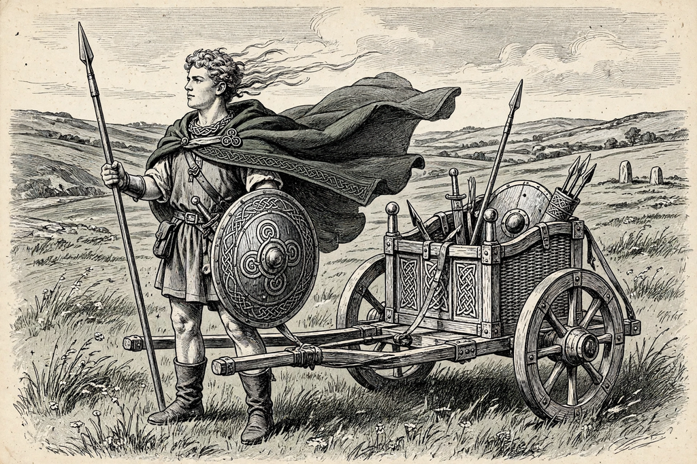

From Wikipedia, the free encyclopedia
| Cú Chulainn | |
|---|---|
| Affiliation | Irish mythology; hero of Ulster |
| Father | Lugh (divine) / Sualtam (mortal) |
| Mother | Deichtine, sister of King Conchobar |
| Weapon | Gáe Bulg, the barbed spear |
| Epic | Táin Bó Cúailnge (The Cattle Raid of Cooley) |
| Fate | Died young, bound to a standing stone, facing his enemies |

Cú Chulainn is the great hero of the Ulster Cycle of Irish mythology, the superhuman defender of Ulster in the Táin Bó Cúailnge, whose single-handed stand against the army of Connacht — while the Ulstermen lay under a curse — is the centrepiece of Ireland's national epic. Son of the god Lugh and of Deichtine, sister of King Conchobar, born Sétanta and renamed "Culann's Hound" as a boy when he slew the smith Culann's ferocious guard-dog and offered himself in its place, he chose a short life of glory over a long one: "I care not if I live but a day and a night, so long as my fame lives after me."
When Queen Medb of Connacht invaded Ulster to seize the great brown bull, Donn Cuailnge, the Ulster warriors lay incapacitated by the curse of Macha, and the seventeen-year-old Cú Chulainn held the border alone: fighting champion after champion in single combat at the fords, harrying the host by night, sustained by Lugh's healing visits and tormented by the Morrígan's enmity. The tragedy's heart is his duel with Ferdiad, his beloved foster-brother, forced against him by Medb: four days of combat at the ford, ending with the gáe bulg — the barbed spear cast with the foot — and Cú Chulainn's lament over the friend he killed. His battle-frenzy, the ríastrad or warp-spasm, in which his body contorted monstrously, one eye shrinking, one bulging, hair standing in spikes with drops of blood, is the most famous description of heroic transformation in Celtic literature.
Bound by his many gessa (taboos) — never to refuse hospitality, never to eat dog flesh — he was trapped by his enemies into breaking them, weakened, and killed in his nineteenth year (by the tradition's count), tying himself upright to a standing stone so as to die facing his foes; only when a raven — the Morrígan's bird — settled on his shoulder did they dare approach. His statue (Oliver Sheppard's "The Dying Cuchulain", 1911) stands in Dublin's General Post Office as the memorial of the 1916 Easter Rising, making the ancient hero the modern nation's emblem of sacrificial resistance.
Celtic mythology · Lugh · The Morrigan · Brigid · Mythology